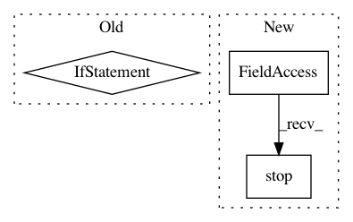

632fe25b5b83d03ed5c7de0d88ef67335fb23b05,magenta/interfaces/midi/midi_interaction.py,CallAndResponseMidiInteraction,stop,#CallAndResponseMidiInteraction#,322
Before Change
def stop(self):
if self._start_call_signal is not None:
self._midi_hub.wake_signal_waiters(self._start_call_signal)
if self._end_call_signal is not None:
self._midi_hub.wake_signal_waiters(self._end_call_signal)
super(CallAndResponseMidiInteraction, self).stop()
After Change
def stop(self):
self._stop_signal.set()
self._captor.stop()
self._midi_hub.stop_metronome()
super(CallAndResponseMidiInteraction, self).stop()
In pattern: SUPERPATTERN
Frequency: 3
Non-data size: 3
Instances
Project Name: tensorflow/magenta
Commit Name: 632fe25b5b83d03ed5c7de0d88ef67335fb23b05
Time: 2016-12-14
Author: adarob@google.com
File Name: magenta/interfaces/midi/midi_interaction.py
Class Name: CallAndResponseMidiInteraction
Method Name: stop
Project Name: jazzband/django-debug-toolbar
Commit Name: edf74beb6e26ed34779dff17240d2fb4c436d451
Time: 2010-03-03
Author: rob@cogit8.org
File Name: debug_toolbar/panels/timer.py
Class Name: TimerDebugPanel
Method Name: process_response
Project Name: MycroftAI/mycroft-precise
Commit Name: d2a5469bf3fe95490f19f6ccfdc9e64a21a6fba8
Time: 2018-02-15
Author: matthew3311999@gmail.com
File Name: runner/precise_runner/runner.py
Class Name: PreciseRunner
Method Name: stop